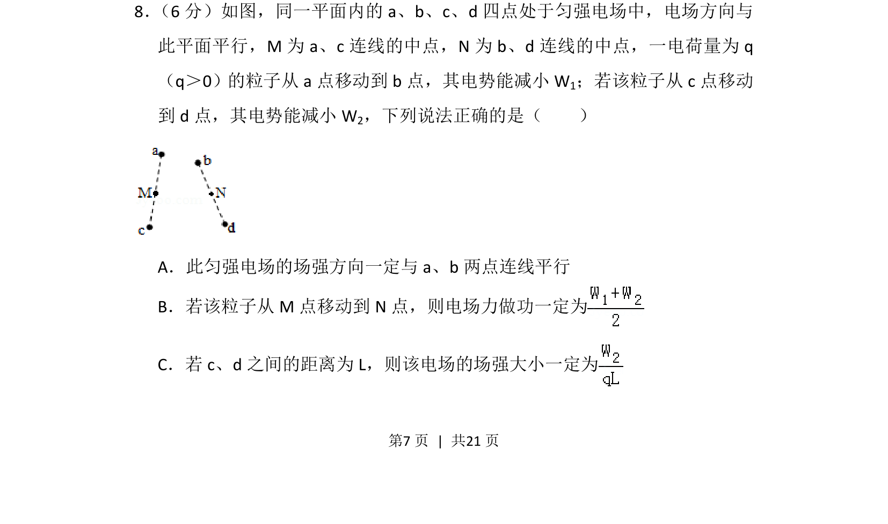
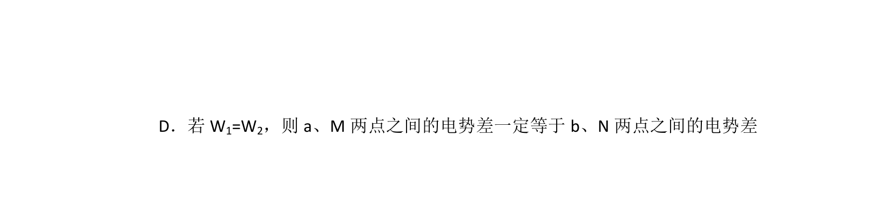
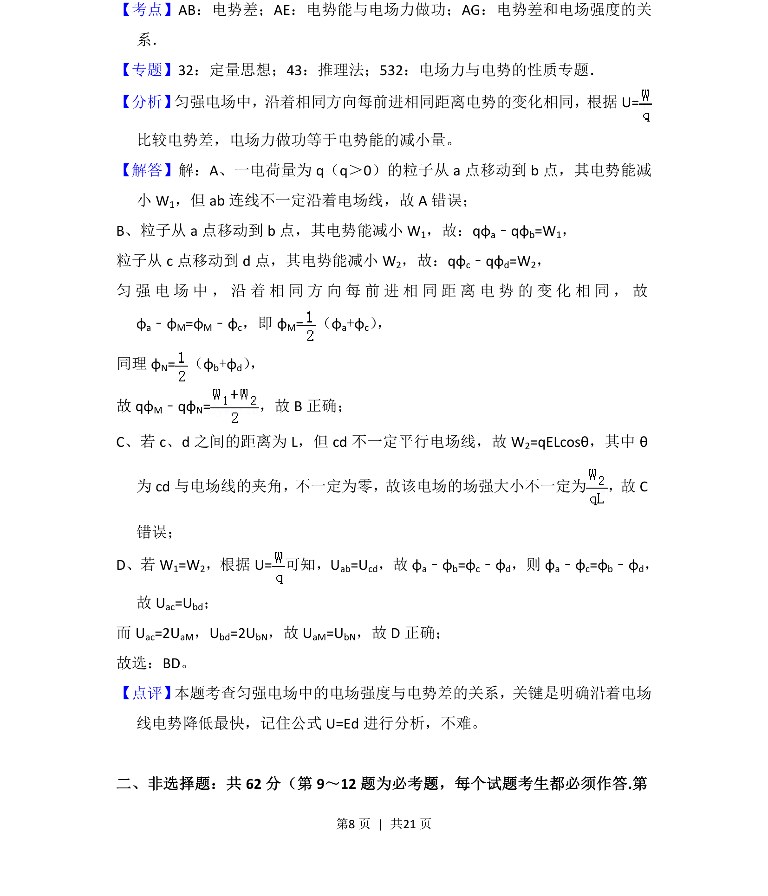

考点：电势能 电场力做功 匀强电场 几何中点


考查匀强电场中电势能与电场力做功的关系，涉及几何中点与等势面分析。

📄 原 PDF 第 7 页：
素材/真题/吉林/2008-2024·（吉林）物理高考真题/2018年高考物理试卷（新课标Ⅱ）（解析卷）.pdf
8． （6分）如图，同一平面内的a、b、c、d四点处于匀强电场中，电场方向与 此平面平行，M为a、c连线的中点，N为b、d连线的中点，一电荷量为q （q＞0）的粒子从a点移动到b点，其电势能减小W 1；若该粒子从c点移动 到d点，其电势能减小W 2，下列说法正确的是（ ） A．此匀强电场的场强方向一定与a、b两点连线平行 B．若该粒子从M点移动到N点，则电场力做功一定为 C．若c、d之间的距离为L，则该电场的场强大小一定为